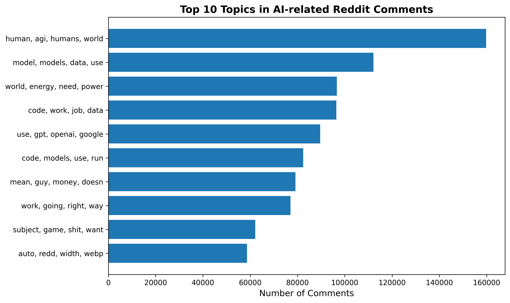
Natural Language Processing
ImportantMilestone 2 Deliverable
This page is populated during Milestone 2 (Week 5) with NLP findings.
Overview
This page presents NLP analysis addressing [3-4] NLP business questions through sentiment analysis, topic modeling, and text mining.
NLP1:Exploratory Topic Modeling
Question: What are the dominant topics discussed in AI-related Reddit posts?
Discovered Topics
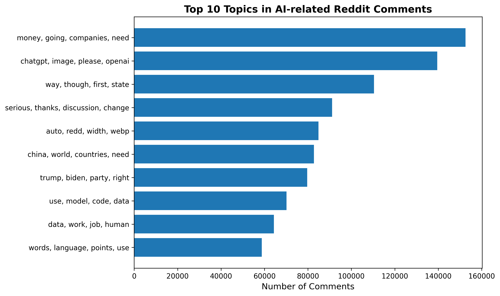
Wordclouds
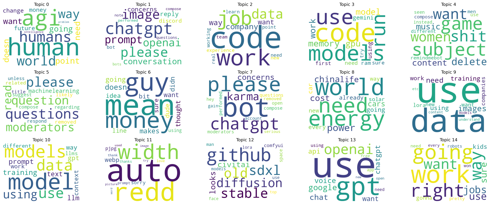
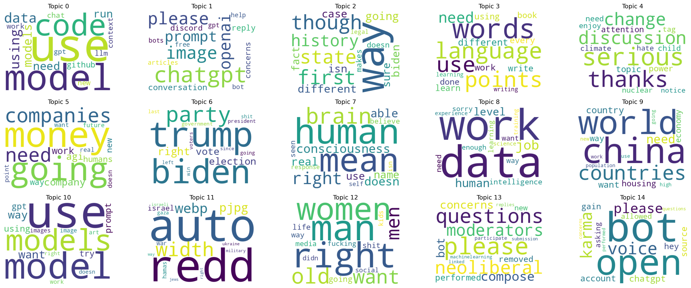
LDA 15 topics
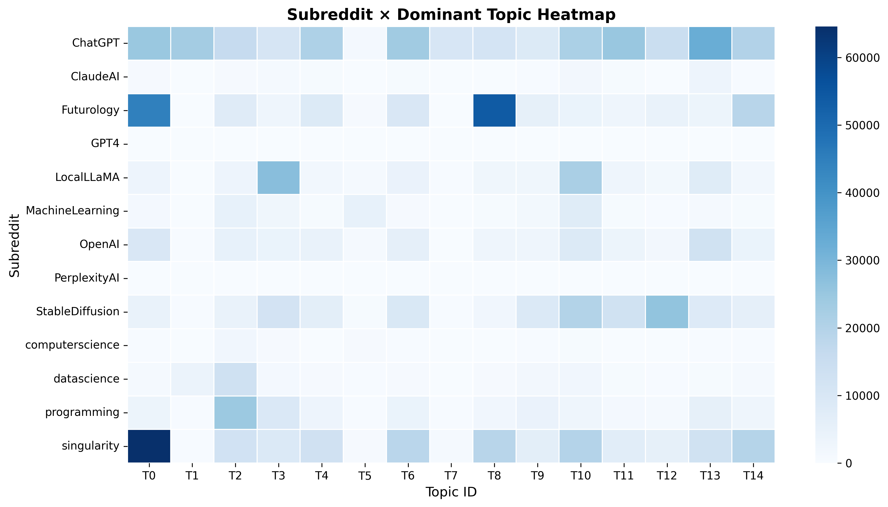
| topic | terms_words |
|--------:|:------------------------------------------------------------------------------------------------------------------------------------------------------------------------------|
| 0 | ['human', 'agi', 'humans', 'world', 'way', 'point', 'going', 'want', 'need', 'doesn', 'change', 'money', 'future', 'intelligence', 'problem'] |
| 1 | ['chatgpt', 'please', 'image', 'openai', 'prompt', 'conversation', 'concerns', 'reply', 'discord', 'bot', 'questions', 'note', 'bots', 'compose', 'performed'] |
| 2 | ['code', 'work', 'job', 'data', 'company', 'way', 'want', 'experience', 'need', 'team', 'point', 'new', 'learn', 'working', 'real'] |
| 3 | ['code', 'models', 'use', 'run', 'memory', 'model', 'work', 'gpu', 'gemini', 'using', 'need', 'ram', 'first', 'sure', 'try'] |
| 4 | ['subject', 'game', 'shit', 'want', 'women', 'delete', 'content', 'music', 'remindmebot', 'different', 'men', 'compose', 'use', 'instead', 'seen'] |
| 5 | ['questions', 'please', 'question', 'moderators', 'read', 'machinelearning', 'removed', 'related', 'regarding', 'compose', 'suggest', 'respond', 'unless', 'likely', 'title'] |
| 6 | ['mean', 'guy', 'money', 'doesn', 'going', 'makes', 'thought', 'want', 'didn', 'idea', 'bit', 'line', 'dude', 'sure', 'using'] |
| 7 | ['bot', 'please', 'chatgpt', 'karma', 'concerns', 'questions', 'performed', 'compose', 'moderators', 'open', 'removed', 'hey', 'gain', 'account', 'serious'] |
| 8 | ['world', 'energy', 'need', 'power', 'china', 'cost', 'life', 'cars', 'going', 'car', 'already', 'every', 'new', 'way', 'solar'] |
| 9 | ['use', 'data', 'images', 'need', 'using', 'training', 'work', 'companies', 'want', 'lora', 'new', 'understand', 'etc', 'models', 'content'] |
| 10 | ['model', 'models', 'data', 'use', 'using', 'training', 'prompt', 'llm', 'text', 'gpt', 'context', 'way', 'work', 'different', 'llms'] |
| 11 | ['auto', 'redd', 'width', 'webp', 'sorry', 'pjpg', 'love', 'prompt', 'thanks', 'thank', 'image', 'used', 'try', 'picture', 'word'] |
| 12 | ['github', 'sdxl', 'stable', 'old', 'diffusion', 'civitai', 'looks', 'comfyui', 'space', 'man', 'models', 'lora', 'face', 'use', 'top'] |
| 13 | ['use', 'gpt', 'openai', 'google', 'chat', 'voice', 'chatgpt', 'api', 'want', 'using', 'need', 'app', 'free', 'open', 'new'] |
| 14 | ['work', 'going', 'right', 'way', 'want', 'jobs', 'use', 'sure', 'kids', 'gonna', 'pretty', 'need', 'won', 'robots', 'every'] |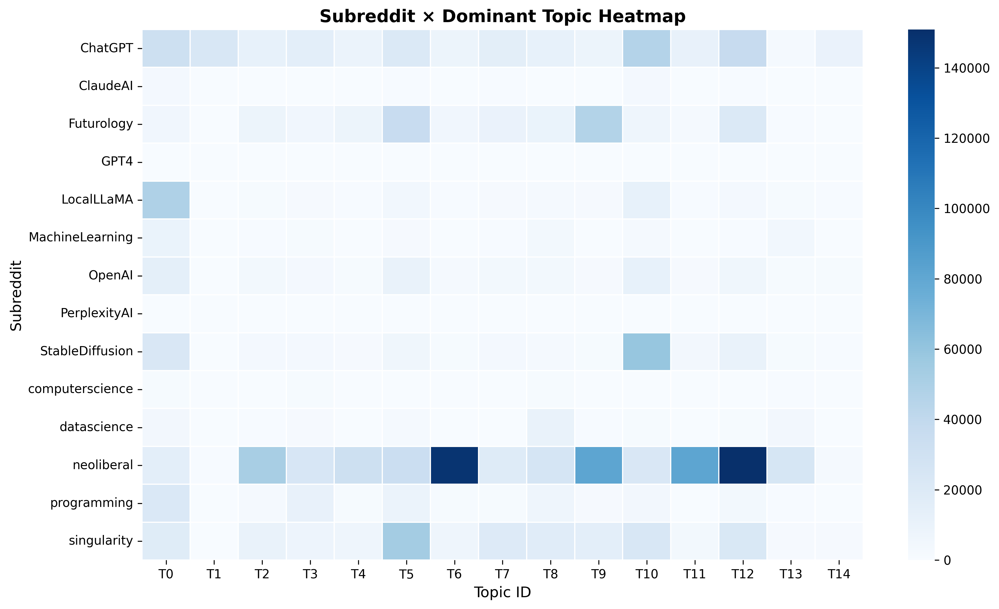
| topic | terms_words |
|--------:|:--------------------------------------------------------------------------------------------------------------------------------------------------------------------------------------|
| 0 | ['use', 'model', 'code', 'data', 'using', 'models', 'need', 'run', 'github', 'chat', 'context', 'llm', 'work', 'new', 'gpt'] |
| 1 | ['chatgpt', 'image', 'please', 'openai', 'prompt', 'conversation', 'reply', 'concerns', 'discord', 'bot', 'help', 'gpt', 'free', 'bots', 'articles'] |
| 2 | ['way', 'though', 'first', 'state', 'history', 'going', 'different', 'biden', 'isn', 'case', 'fact', 'sure', 'doesn', 'makes', 'legal'] |
| 3 | ['words', 'language', 'points', 'use', 'need', 'different', 'work', 'learn', 'using', 'every', 'write', 'done', 'book', 'writing', 'learning'] |
| 4 | ['serious', 'thanks', 'discussion', 'change', 'topic', 'power', 'attention', 'child', 'need', 'tag', 'enjoy', 'climate', 'nuclear', 'hate', 'notice'] |
| 5 | ['money', 'going', 'companies', 'need', 'company', 'agi', 'work', 'humans', 'new', 'way', 'future', 'want', 'point', 'real', 'doesn'] |
| 6 | ['trump', 'biden', 'party', 'right', 'election', 'vote', 'government', 'president', 'last', 'going', 'left', 'voters', 'shit', 'win', 'since'] |
| 7 | ['human', 'mean', 'brain', 'right', 'consciousness', 'doesn', 'able', 'real', 'name', 'use', 'believe', 'seen', 'response', 'isn', 'self'] |
| 8 | ['data', 'work', 'job', 'human', 'level', 'intelligence', 'need', 'want', 'way', 'sorry', 'enough', 'learning', 'experience', 'science', 'training'] |
| 9 | ['china', 'world', 'countries', 'need', 'country', 'want', 'housing', 'economy', 'way', 'population', 'new', 'going', 'use', 'work', 'high'] |
| 10 | ['use', 'model', 'models', 'want', 'way', 'using', 'prompt', 'gpt', 'try', 'image', 'images', 'work', 'art', 'doesn', 'right'] |
| 11 | ['auto', 'redd', 'width', 'webp', 'pjpg', 'israel', 'hamas', 'war', 'gaza', 'israeli', 'ukraine', 'military', 'jews', 'right', 'way'] |
| 12 | ['man', 'right', 'women', 'old', 'want', 'men', 'going', 'shit', 'life', 'way', 'media', 'fucking', 'kids', 'social', 'didn'] |
| 13 | ['please', 'questions', 'neoliberal', 'moderators', 'compose', 'concerns', 'bot', 'performed', 'removed', 'new', 'participate', 'machinelearning', 'linked', 'submission', 'replies'] |
| 14 | ['bot', 'open', 'voice', 'karma', 'please', 'chatgpt', 'account', 'source', 'hey', 'gain', 'allowed', 'asking', 'questions', 'concerns', 'performed'] |Technical Approach :
1. Dataset Filtering
We restrict the dataset to AI-related discussions by:
Selecting comments only from the following AI-focused subreddits: ChatGPT, OpenAI, GPT4, ClaudeAI, PerplexityAI, StableDiffusion, MidJourney, Sora, AIArt, GenerativeAI, ArtificialIntelligence, MachineLearning, computerscience, datascience, programming, Futurology, singularity, neoliberal, LocalLLaMA, OpenAI_Dev
Removing comments that:
Are null or empty
Contain fewer than 30 characters
This ensures that analysis is conducted on substantive, content-rich comments.
2. Text Processing
2.1 Tokenization
A RegexTokenizer is applied with:
- Lowercasing enabled (
toLowercase=True) - Splitting on non-word characters (
pattern="\\W+")
2.2 Stopword Removal
We apply an expanded stopword list that includes:
- Default English stopwords
- Conversational fillers (e.g., lol, haha, yeah, hmm, well, okay)
- Reddit-specific terms (e.g., thread, subreddit, comment, mod)
- URL and formatting artifacts (e.g., http, https, www, png, jpg, youtube)
- Vague adjectives and common auxiliary verbs
- Pronouns and common function words
This step removes generic, low-information tokens prior to modeling.
3. Custom Token Filtering (UDF)
After stopword removal, a custom Spark UDF applies additional filters:
- Remove tokens that begin with:
http,www,u/,r/- Remove tokens that:
- Contain digits
- Are not alphabetic
- Have fewer than 3 characters
- Appear in the expanded stopword list
Documents with zero remaining tokens are discarded.
This stage produces a clean, semantically meaningful token list for each comment.
4. Modeling
4.1 CountVectorizer
We transform the cleaned tokens into a sparse term–document matrix using: vocabSize = 10,000 minDF = 50
4.2 Latent Dirichlet Allocation (LDA)
We train an LDA model configured with:
k = 15 topics
maxIter = 20
seed = 42This produces interpretable topic structures that reflect key themes in AI-related discussions.
5. Outputs
Topic → Top Terms
data/NLPQ1_Anna_spark_lda_topics_ver2.csv
Contains top terms per topic, including:
- Term indices
- Term weights
- Human-readable top 15 words (
terms_words)
Document → Dominant Topic Counts
data/NLPQ1_Anna_spark_lda_topic_counts_ver2.csv
Contains:
- Dominant topic for each document
- Document counts per topic
Document → Topic Distribution
data/parquet/NLPQ1_Anna_doc_topic_dist_ver2.parquet
Contains:
id
subreddit
topicDistribution(probability vector across 15 topics)
Downstream analysis produces multiple figures such as:
NLPQ1_Anna_topic_sizes_.png
NLPQ1_Anna_subreddit_topic_heatmap_.png
NLPQ1_Anna_top_topics_labeled_.png
NLPQ1_Anna_topic_term_heatmap_.png
topic_wordclouds_all_topics.pngEverything was generated for both with-neoliberal and without-neoliberal versions.
Key Insight
Overall Thematic Structure of AI Discussions on Reddit
Across the 15 LDA topics, AI-related Reddit conversations can be grouped into four major thematic domains:
1. Technical AI Development and Engineering
This domain includes detailed discussions on running AI models (Topics 3, 9, 10), handling data pipelines, troubleshooting GPU or memory limitations, and using tools from the Stable Diffusion ecosystem (Topic 12). The conversations demonstrate active knowledge sharing among practitioners developing or fine-tuning AI systems.
2. User Experience, Platforms, and Community Governance
Several topics (1, 5, 7, 11) involve practical or administrative concerns such as prompting ChatGPT, resolving moderation issues, interacting with bots, and managing image outputs. These discussions reflect the operational realities of using AI tools and participating in AI-focused online communities.
3. Societal, Philosophical, and Economic Implications of AI
Topics 0, 8, and 14 show broader reflections on how AI affects humanity, infrastructure, energy consumption, and labor markets. These conversations extend beyond technical details and highlight public engagement with the societal consequences of rapid AI development.
4. Casual, Cultural, and Entertainment-Oriented Engagement
Topics 4 and 6 capture non-technical discussions, ranging from gaming and content disputes to light informal conversations. These topics illustrate the cultural integration of AI discussions within everyday online interactions.
Overall, the topic structure reveals a multifaceted ecosystem where technical expertise, practical usage, societal reflection, and casual social interaction coexist within AI-related Reddit communities.
The inclusion of neoliberal subreddits introduces substantial thematic shifts in AI-related discussions. Across the 15 topics, the thematic structure can be organized into four broad domains:
1. Technical Model Use, Coding, and Creative Applications
Topics 0, 1, 3, 8, and 10 capture conversations about running LLMs, writing code, handling data workflows, troubleshooting errors, and generating images or art. These discussions remain core across both models, representing the practical side of AI participation on Reddit.
2. Political, Economic, and Ideological Debates
Several topics (2, 5, 6, 9, 11, 12, 13) show a strong influence from neoliberal subreddits. Users discuss elections, political parties, economic incentives, global conflicts, gendered social dynamics, and community governance. This domain is significantly amplified compared to the model without neoliberal content.
3. Philosophical and Cognitive Reflections on Human Nature and AI
Topic 7 illustrates deeper cognitive and philosophical inquiries about consciousness, belief, and the nature of human thought. These discussions explore how humans compare to AI systems and what constitutes intelligence or selfhood.
4. Platform Mechanics, Moderation, and Social Interaction
Topics 4 and 14 include discussions about serious societal issues, moderation processes, bots, karma, and interactions within the Reddit platform. Users navigate both community rules and broader social or ethical considerations.
Overall, including neoliberal content shifts the landscape toward more political, economic, and ideological debate, widening the thematic range of AI conversations and revealing how sociopolitical communities contextualize AI within broader societal narratives.
NLP2: Emotion & Sentiment Patterns of High-Engagement Users
Question:
How do high-engagement contributors (top 1% posters) emotionally express themselves across AI and tech subreddits, and what differences emerge between technical, creative, and general-interest AI communities?
Analysis Approach
This analysis examines the emotional tone of Reddit’s most active AI/tech contributors by focusing on the top 1% of users across the ecosystem. The goal is to understand not just what these power users talk about, but how they express themselves emotionally.
The workflow includes:
- Identifying High-Engagement Users
- Computed the global 99th-percentile threshold for posting activity
- Extracted all comments and submissions from these users for emotion classification
- Computed the global 99th-percentile threshold for posting activity
- Text Preprocessing
- Lowercasing, URL removal, markdown stripping
- Tokenization + stopword filtering
- Reddit-specific cleaning (removing flairs, user tags, formatting noise)
- Lowercasing, URL removal, markdown stripping
- Emotion Classification
- Applied a multi-category emotion lexicon (joy, love, anger, fear, sadness, surprise, neutral)
- Calculated proportional emotion scores per subreddit
- Normalized counts to account for subreddit size
- Applied a multi-category emotion lexicon (joy, love, anger, fear, sadness, surprise, neutral)
- Cross-Subreddit Emotional Comparison
- Categories analyzed:
- Text AI: ChatGPT, OpenAI, GPT-4, ClaudeAI, PerplexityAI
- Creative AI: StableDiffusion, MidJourney, Sora, AIArt
- Research/Tech: MachineLearning, datascience, programming, computerscience
- Futures/Ideology: Futurology, singularity, neoliberal
- Baseline: AskReddit
- Text AI: ChatGPT, OpenAI, GPT-4, ClaudeAI, PerplexityAI
- Categories analyzed:
- Visualization
- Radar charts reveal emotional “profiles” of each subreddit
- Highlights which communities express fear, anger, joy, neutrality, or surprise more than others
- Radar charts reveal emotional “profiles” of each subreddit
Findings
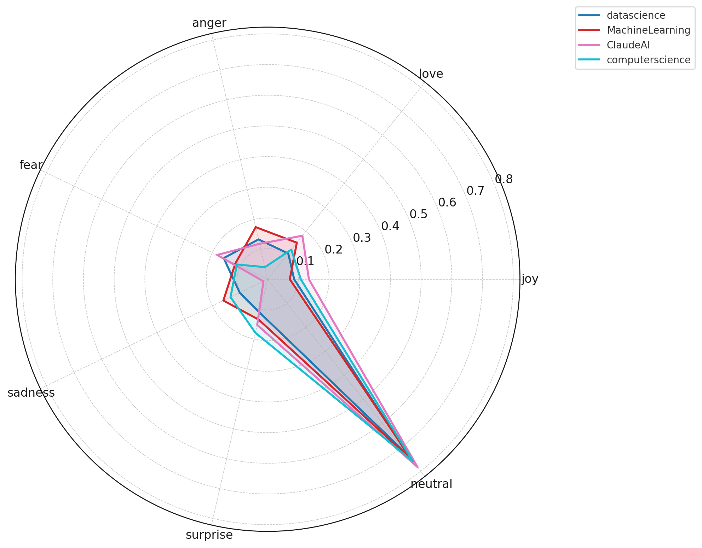
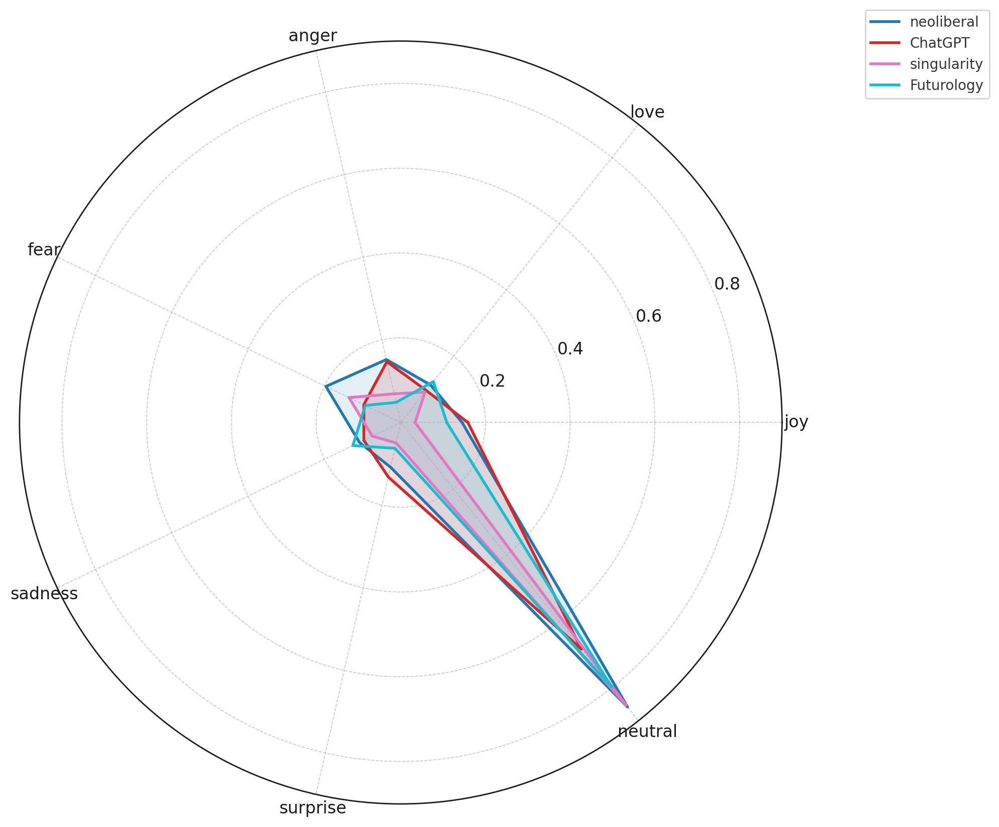
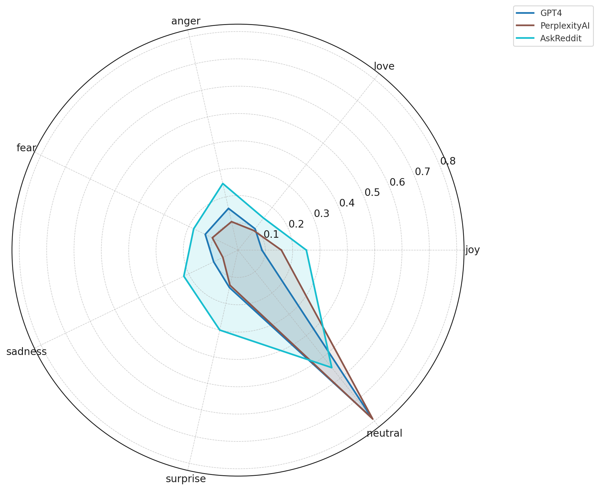
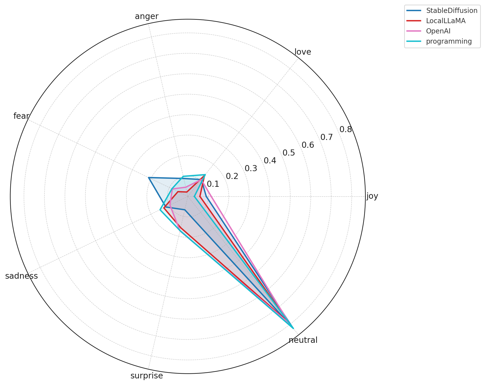
Key Insights
Neutral sentiment dominates across all AI subreddits.
High-engagement users overwhelmingly communicate in a neutral, analytical tone, reflecting information-oriented discussions rather than emotional expression.Technical communities show the flattest emotional profiles.
Subreddits such as MachineLearning, datascience, programming, and LocalLLaMA exhibit minimal joy, fear, anger, or sadness. Conversations remain focused on debugging, implementation, and model performance rather than personal feelings.Creative AI communities express more emotional variability.
StableDiffusion, AIArt, and MidJourney display higher levels of surprise, fear, and anger, consistent with debates over creativity, ethics, aesthetics, and model instability.Future-oriented and ideological subreddits show heightened fear and concern.
Communities like Futurology, singularity, and neoliberal express more fear, sadness, and anger, reflecting societal, economic, and existential anxieties around AI rather than purely technical concerns.AskReddit is the most emotionally expressive baseline.
When general Reddit users discuss AI, emotional tone spikes — particularly fear and sadness — revealing public uncertainty and mixed reactions toward AI’s rapid advancement.Model-specific subreddits form a tight emotional cluster.
ChatGPT, ClaudeAI, GPT4, OpenAI, and PerplexityAI show nearly identical sentiment distributions, indicating that power users engage with text-based AI tools in a consistent, utility-driven, and low-emotion manner.
NLP3:Sentiment Analysis
Question:
How has sentiment toward different generative AI tools (e.g., ChatGPT, Midjourney, Sora) shifted over time across subreddits?
Analysis Approach
This analysis uses a lexicon-based sentiment analysis approach to track how sentiment toward different AI tools has evolved over time across Reddit subreddits. The methodology includes:
- Text Preprocessing:
- Uses Spark ML Pipeline for efficient text processing
- Tokenization, stop word removal, and text cleaning (removes URLs, Reddit formatting, markdown)
- HashingTF with 5,000 features for feature extraction
- Sentiment Calculation:
- Lexicon-based approach using positive and negative word lists
- Calculates sentiment scores ranging from -1 (very negative) to +1 (very positive)
- Normalizes scores based on the ratio of positive to negative sentiment words
- Categorization:
- Text AI: ChatGPT, OpenAI, GPT-4, Claude, Perplexity
- Creative AI: Midjourney, Stable Diffusion, Sora, AI Art
- Research/Tech: GenerativeAI, ArtificialIntelligence, MachineLearning
- Baseline: AskReddit (with and without AI mentions)
- Temporal Aggregation:
- Aggregates sentiment scores by subreddit, AI category, and time period (monthly)
- Calculates average sentiment, standard deviation, and post counts per time period
- Tracks sentiment trends from June 2023 to June 2024
Findings
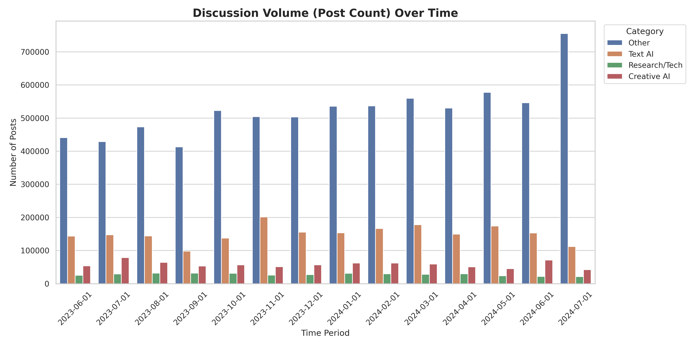
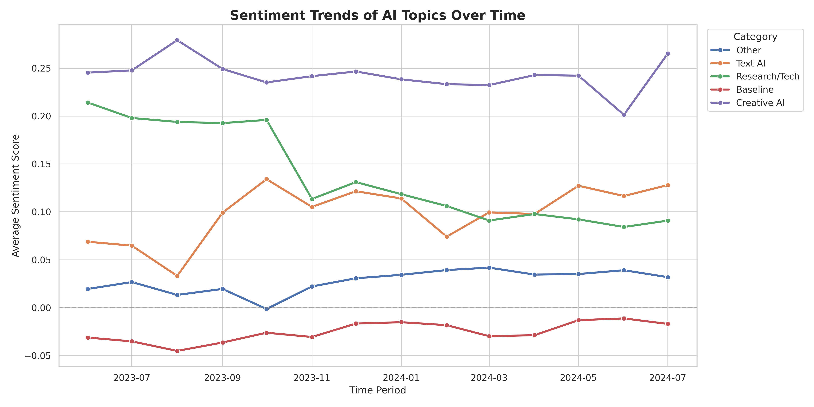
Key Insights
Creative AI maintains the highest positive sentiment (0.20-0.27), significantly outperforming Text AI (0.03-0.13) and Research/Tech (0.09-0.21). Users have more positive wordings when discussing about image generation tools than text-based AI.
Text AI sentiment is highly volatile, fluctuating dramatically with each major model release. Sentiment spikes around announcements (e.g., 0.13 in October 2023) then normalizes as users encounter practical limitations, reflecting the rapid release cycle and mixed user experiences.
Research/Tech sentiment declined significantly from 0.21 (July 2023) to 0.09 (June 2024), suggesting growing concerns or shifting attitudes in technical communities over time.
AI discussions are more positive than general Reddit content: While general AskReddit posts maintain negative sentiment (-0.045 to -0.01), all AI-specific categories show positive sentiment, indicating that AI-related discussions carry distinct emotional tones—combining both excitement and concerns.
NLP4: Profanity Language Frequency Analysis
Question: What account (e.g. percentage) of profanity words used to describe AI?
Analysis Approach
The Google Profanity Words dataset provides a widely adopted, community-maintained list of offensive and inappropriate terms used across multiple languages. The repository has 676 stars, 249 forks, and active usage within production-grade applications, indicating strong reliability and broad validation.
The list is:
Open-source, enabling transparent inspection and reproducibility
Actively maintained, with frequent updates and community oversight
Language-specific (including a dedicated English list), making it suitable for Reddit text analysis
Designed for profanity filtering, aligning directly with the goals of detecting toxicity within Reddit comments and submissions
Given these characteristics, the dataset serves as a credible, high-quality lexical resource for robust profanity detection in large-scale NLP pipelines such as this Spark NLP Reddit analysis task.
The following process include:
- Cleaned text by removing URLs, markdown, usernames, and very short posts.
- Applied Spark NLP preprocessing: tokenization, normalization, stop-word removal, and lemmatization to produce clean tokens.
- Computed profanity metrics (gathered by) per subreddit using Spark-native token filtering.
- Identified top profanity words by counting token frequencies across subreddits.
- Generate visualizations: profanity rate bar chart + per-subreddit word clouds, using sampled comments (30%).
Findings
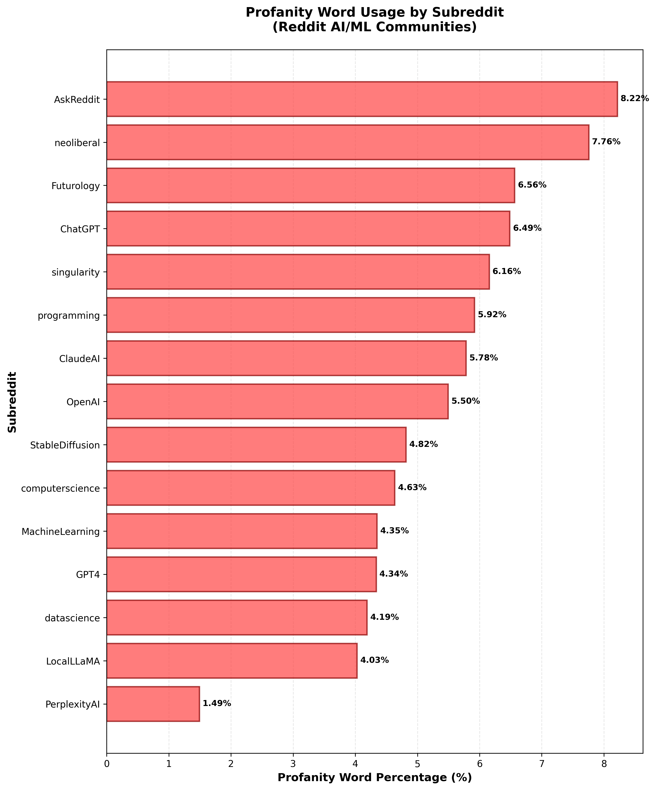
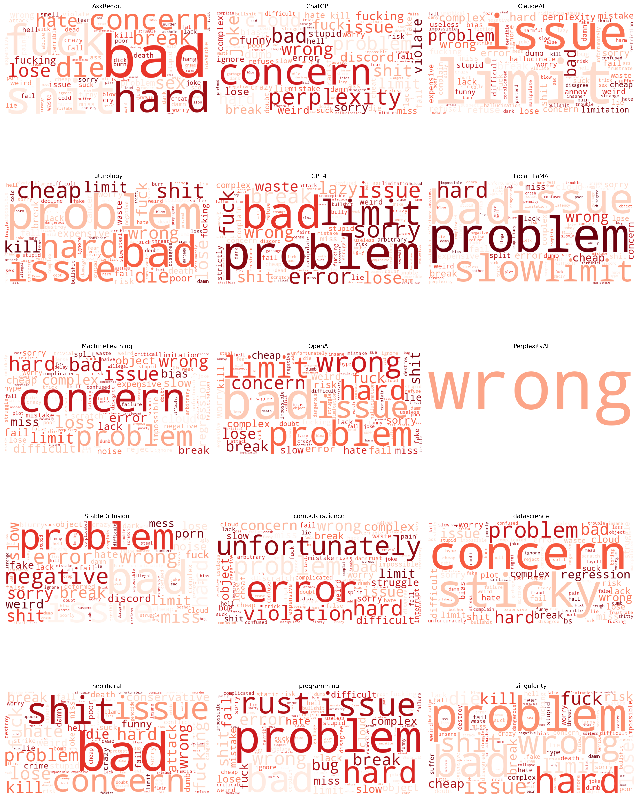
Key Insights:
The bar chart showcase this pattern: AskReddit leads with the highest profanity percentage (8.22%), followed by neoliberal (7.76%) and Futurology (6.56%), signaling more emotionally charged or socially polarized conversations. Meanwhile, subreddits focused on engineering or research- such as datascience, GPT4, MachineLearning, and computerscience - show lower profanity levels (4–4.6%). PerplexityAI, notably, has the lowest rate (1.49%), indicating highly utility-driven, information-focused discussions with minimal emotional or toxic language. Overall, the results show a clear divide between general-audience or debate-oriented communities and technical AI research communities in terms of emotional tone and toxicity.
Across the word clouds, the most prominent terms, such as “problem,” “issue,” “error,” “wrong,” “concern,” “hard,” “limit,” and “bad”, indicate that discussions across AI-related subreddits are heavily anchored in frustrations, feature limitations, and technical challenges. These words dominate nearly every community, suggesting a shared pattern: users frequently describe difficulties with AI tools, unexpected behaviors, performance failures, and constraints that hinder workflows. Even in non-technical subreddits, terms like “concern,” “violation,” and “unfortunately” show that sentiment tends toward reporting negative experiences or dissatisfaction.
Some subreddits amplify specific themes: GPT4, ChatGPT, ClaudeAI, and LocalLLaMA highlight words like “wrong,” “error,” “bad,” “break,” and “slow,” pointing to reliability and accuracy problems. Futurology and AskReddit show larger emotional or general expressions like “hard,” “kill,” “limit,” and “cheap,” reflecting broader worries or sensational narratives about AI. Conversely, PerplexityAI and MachineLearning maintain smaller, more technical clouds focused on concrete issues rather than emotional or vulgar expressions. Overall, the clouds reveal that the core vocabulary across communities centers on problems, errors, and concerns, painting a picture of widespread user frustration and perceived limitations of current AI tools.
Summary
Answers to NLP Business Questions
- What are the dominant topics discussed in AI-related Reddit posts?:
examines how ideological communities shape public discourse on artificial intelligence by comparing topic structures from two LDA models: one trained on AI-related Reddit comments excluding neoliberal subreddits, and one incorporating them. Without neoliberal content, discussions concentrate on technical model usage, coding workflows, data engineering, and philosophical reflections on AGI and the future of work. When neoliberal subreddits are included, the thematic landscape broadens markedly, introducing politically charged topics—such as U.S. electoral dynamics, global geopolitics, gender debates, and economic concerns surrounding corporate power and societal change—alongside intensified discussions about moderation and community governance. The comparison reveals that while technical conversations remain consistent across both models, ideological communities significantly amplify political, economic, and social framing around AI. These findings highlight how online community composition shapes the narratives and concerns that emerge in public conversations about artificial intelligence.
- What emotional and sentiment patterns characterize high-engagement users across AI and tech subreddits, and how do these patterns differ between technical, creative, and general-interest communities?:
Analysis of the top 1% most active contributors across AI-related subreddits reveals clear emotional signatures that vary by community type. Technical subreddits (such as MachineLearning, datascience, programming, and LocalLLaMA) overwhelmingly exhibit neutral sentiment, reflecting discussion focused on debugging, implementation challenges, and model performance rather than personal or emotional expression. In contrast, creative AI communities (such as StableDiffusion, AIArt, and MidJourney) display more emotional variability, including elevated levels of fear, anger, and surprise—often tied to debates around artistic creativity, ethics, tool limitations, and unexpected model behavior.
Subreddits oriented toward societal or future-oriented conversations (Futurology, singularity, neoliberal) show higher proportions of fear, sadness, and anger, revealing broader public anxieties surrounding AI’s economic, political, and existential impacts. Meanwhile, general-audience spaces like AskReddit contain the strongest emotional signals overall, especially fear and sadness, indicating that everyday users engage with AI through a more uncertain and emotionally charged lens. Finally, model-specific communities such as ChatGPT, GPT4, ClaudeAI, and PerplexityAI show nearly identical sentiment distributions: highly neutral with slight frustration spikes, reflecting consistent, utility-driven engagement from power users. Collectively, these findings show that emotional expression around AI depends heavily on community purpose—technical spaces minimize emotion, creative and sociopolitical spaces amplify it, and public forums surface the deepest anxieties and reactions.
- How has sentiment toward different generative AI tools (e.g., ChatGPT, Midjourney, Sora) shifted over time across subreddits?:
Lexicon-based sentiment analysis from June 2023 to June 2024 reveals distinct patterns across AI tool categories. Creative AI tools maintain the highest positive sentiment (0.20-0.27), with users expressing more positive language when discussing image generation tools compared to text-based alternatives. Text AI tools show high volatility (0.03-0.13), with sentiment spiking around major model releases (e.g., 0.13 in October 2023) then normalizing as users encounter practical limitations. Research/Tech subreddits show declining sentiment, dropping from 0.21 (July 2023) to 0.09 (June 2024), suggesting growing concerns in technical communities. Temporal analysis reveals clear hype cycles: sentiment peaks coincide with major releases but return to baseline within 2-4 weeks, indicating that initial excitement gives way to practical usage concerns. Notably, all AI-specific categories show positive sentiment, while general AskReddit content maintains negative sentiment (-0.045 to -0.01), highlighting that AI discussions carry distinct emotional tones combining both excitement and concerns.
- What account (e.g. percentage) of profanity words used to describe AI?:
The analysis of Reddit comments reveals a significant divide in profanity usage and thematic focus across subreddits. AskReddit has the highest profanity rate at 8.22%, while technical subreddits like datascience and MachineLearning show lower levels (4–4.6%), with PerplexityAI at just 1.49%, indicating more constructive discussions. Word clouds highlight a shared frustration across AI-related communities, with terms like “problem,” “error,” and “concern” dominating. Subreddits like GPT4 and ChatGPT emphasize reliability issues, while Futurology and AskReddit express broader emotional concerns about AI. Overall, there’s a clear pattern of user dissatisfaction and the emphasis on technical challenges across communities.
Tip
All NLP code is in code/nlp/ directory.